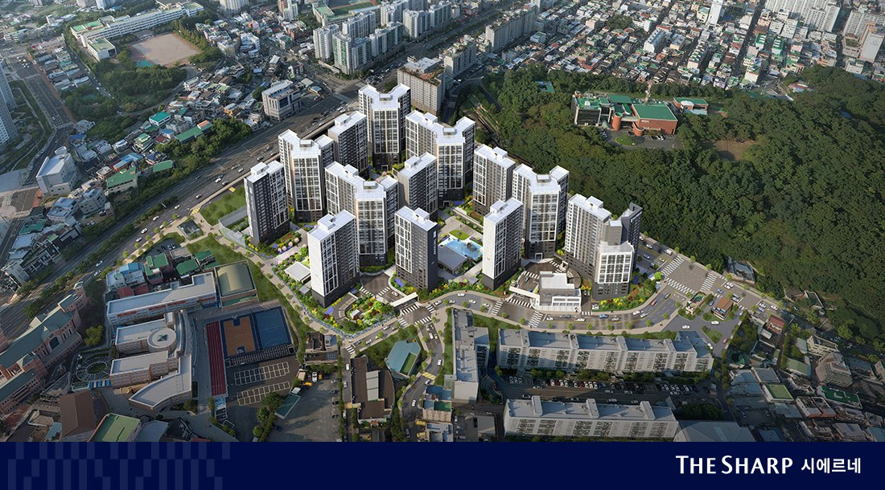
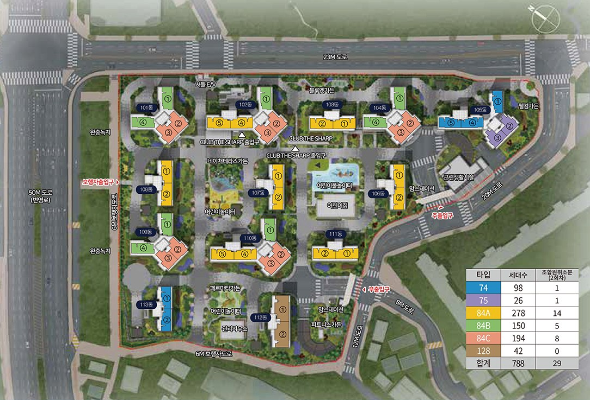
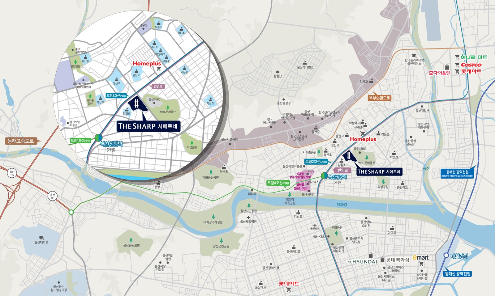

중구 학성동 번영로 옆에 들어서는 788세대 단지입니다. 학성동지역주택조합이 사업주체이고 포스코이앤씨가 짓습니다. 2024년 11월 일반분양 231세대를 공급했고, 2026년에 조합원 취소분이 두 차례 더 나왔습니다. 세 번의 청약 결과와 분양가, 주변 실거래를 나란히 놓고 정리했습니다.
단지 개요
- 위치
- 울산광역시 중구 학성동 397-1번지 일원
- 일반분양
- 231세대
- 전체 세대
- 788세대
- 입주 예정
- 2027.05
- 시공
- 주식회사 포스코이앤씨
- 주차
- 1,074대 (세대당 1.36)
- 건축 규모 — 지하 3층 ~ 지상 최고 21층, 13개 동 (모집공고문)
- 사업주체 · 시공 — 학성동지역주택조합 · 포스코이앤씨 (신탁 코리아신탁)
- 입주 예정 — 2027년 5월 (모집공고문 · 정확한 날짜는 추후 통보)
- 주차 — 100% 지하주차, 아파트 1,074대 · 세대당 약 1.36대
- 분양 홍보관 — 남구 번영로 166, 1층
타입과 세대 구성
전용 74㎡, 75㎡, 84㎡ A·B·C, 128㎡ 여섯 가지입니다. 전체 788세대 가운데 조합원 몫을 뺀 231세대가 2024년 일반분양으로 나왔습니다.
| 타입 | 전체 세대 | 2024 일반분양 |
|---|---|---|
| 74㎡ | 98 | 39 |
| 75㎡ | 26 | 10 |
| 84㎡A | 278 | 55 |
| 84㎡B | 150 | 38 |
| 84㎡C | 194 | 47 |
| 128㎡ | 42 | 42 |
| 합계 | 788 | 231 |
84㎡가 622세대로 전체의 약 79%입니다. 128㎡ 42세대는 전부 일반분양으로 나왔습니다.

청약 일정 (2024년 본청약)
- 입주자모집공고2024.11.01
- 특별공급2024.11.11
- 1순위2024.11.12
- 2순위2024.11.13
- 당첨자 발표2024.11.20
- 계약2024.12.02 ~ 12.04
청약홈 공고 기준 · 2026.10.14 현재
타입별 분양가 (2024년 본청약 · 청약홈 공고 최고가 기준)
| 타입 | 전용 | 공급 | 세대 | 최고 분양가 | 3.3㎡당 |
|---|---|---|---|---|---|
| 74 | 74.95㎡ | 103.44㎡ | 39 | 6억 9,200만원 | 2,212만원 |
| 75 | 75.98㎡ | 105.81㎡ | 10 | 6억 9,000만원 | 2,156만원 |
| 84A | 84.96㎡ | 108.43㎡ | 55 | 7억 3,900만원 | 2,253만원 |
| 84B | 84.97㎡ | 108.71㎡ | 38 | 7억 4,100만원 | 2,253만원 |
| 84C | 84.9㎡ | 109.37㎡ | 47 | 7억 3,000만원 | 2,207만원 |
| 128 | 128.92㎡ | 155.77㎡ | 42 | 10억 3,500만원 | 2,196만원 |
청약홈 입주자모집공고 · 층·향별로 분양가가 다르며 표는 타입별 최고가입니다. 발코니 확장비·옵션은 따로입니다.
세 번의 청약, 경쟁률은 이렇게 달라졌습니다
같은 단지에 청약이 세 번 있었습니다. 본청약 뒤에 나온 두 번은 조합원이 계약을 취소한 세대를 다시 공급한 것입니다.
| 본청약 (2024.11) | 조합원 취소분 1회차 (2026.5) | 조합원 취소분 2회차 (2026.9) | |
|---|---|---|---|
| 공급 세대 | 231 | 36 | 29 |
| 1·2순위 접수 | 1,925건 | 2,158건 | 1,284건 |
| 74㎡ | 16.07대 1 | 72.50대 1 | 52.00대 1 |
| 75㎡ | 7.20대 1 | 32.00대 1 | 37.00대 1 |
| 84㎡A | 43.70대 1 | 373.00대 1 | 147.00대 1 |
| 84㎡B | 13.11대 1 | 163.75대 1 | 58.50대 1 |
| 84㎡C | 9.74대 1 | 95.33대 1 | 48.33대 1 |
| 128㎡ | 1.10대 1 | 공급 없음 | 공급 없음 |
- 경쟁률은 청약홈에 공개된 1·2순위 결과입니다. 공급 세대가 2~6세대로 적은 취소분은 숫자가 크게 나옵니다. 본청약과 그대로 견주기보다 「접수 건수」를 같이 보시는 편이 정확합니다.
- 당첨 가점(84㎡A 기준 · 최저/최고) — 본청약 59 / 68점, 1회차 65 / 65점, 2회차 58 / 61점.
- 2회차는 특별공급 16세대에 255건이 접수됐습니다(신혼부부 75 · 신생아 73 · 생애최초 72 · 다자녀 31 · 노부모부양 2).
조합원 취소분 분양가 (2회차 · 2026년 9월 공고 최고가)
| 타입 | 2024 본청약 | 2026 취소분 2회차 |
|---|---|---|
| 74㎡ | 6억 9,200만원 | 6억 8,400만원 |
| 75㎡ | 6억 9,000만원 | 6억 8,600만원 |
| 84㎡A | 7억 3,900만원 | 7억 4,900만원 |
| 84㎡B | 7억 4,100만원 | 7억 5,100만원 |
| 84㎡C | 7억 3,000만원 | 7억 4,000만원 |
두 값 모두 그 공고에서 가장 비싼 세대의 금액입니다. 취소분은 층·동이 정해진 세대라 같은 타입이어도 세대마다 금액이 다릅니다. 또 이미 발코니가 확장된 상태로 공급되어 확장을 빼 달라고 할 수 없습니다(2회차 모집공고문).
주변 시세와 나란히 보기
분양가만 봐서는 비싼지 싼지 알기 어렵습니다. 같은 학성동에서 최근 거래된 84㎡(33평) 아파트와 분양권 가격을 나란히 놓았습니다. 이 표는 국토교통부 실거래 자료로 매일 새로 채워집니다.
| 단지 | 준공 | 거래 | 평균 | 최고 | 최근 |
|---|---|---|---|---|---|
| 더샵 시에르네 84㎡ 분양가(최고) | 2027 입주 예정 | — | 7억 4,100만원 | — | — |
| 영우트리지움2차 | 2023년 준공 | 2건 | 5억 5,750만원 | 6억 500만원 | 07.01 |
| 학성동파크디아채 | 2019년 준공 | 2건 | 3억 7,500만원 | 3억 9,000만원 | 05.19 |
| 동남하이빌6차 | 2019년 준공 | 1건 | 3억 6,000만원 | 3억 6,000만원 | 05.18 |
| 강변경남팰리스 | 2022년 준공 | 2건 | 3억 700만원 | 3억 1,400만원 | 08.28 |
| 태산아이빌 | 2017년 준공 | 3건 | 2억 7,867만원 | 2억 8,800만원 | 09.19 |
| 더샵 시에르네 (분양권) | 입주 전 | 3건 | 8억 751만원 | 8억 5,028만원 | 09.06 |
중구 학성동 · 전용 83~86㎡ · 2026.04.13 ~ 2026.10.12 계약 · 2015년 이후 준공 아파트와 분양권 · 해제 거래 제외 · 국토교통부 실거래가
입지

- 도로 — 단지 서쪽이 50m 폭 번영로입니다. 북부순환도로·강북로·화합로와 이어집니다.
- 트램(계획) — 분양 자료 위치도에는 울산 도시철도 트램 2호선·4호선과 환승역 「복산성당역(가칭)」이 계획으로 표시돼 있습니다. 아직 계획 단계라 노선과 일정은 바뀔 수 있습니다.
- 공원 — 단지 바로 옆이 울산MBC와 MBC문화동산이고, 학성공원·서덕출공원이 가깝습니다.
- 생활 — 홈플러스, 성남동 상업지역과 젊음의 거리, 울산시립미술관, 중구문화의전당이 생활권입니다.
학교
- 초등학교 — 함월초등학교가 단지 남서쪽에 붙어 있습니다.
- 중·고등학교 — 분양 자료는 반경 1.5km 안에 초등학교 8곳·중학교 4곳·고등학교 5곳이 있다고 소개합니다(무룡중·가온중·울산중, 성신고·울산고·학성여고 등이 위치도에 표시).
- 실제 배정 학교는 울산광역시교육청 공고로 확인하셔야 합니다.
커뮤니티와 단지 설계
- 커뮤니티 — 피트니스클럽, 실내 골프연습장(GDR 7타석), GX룸, 사우나, 독서실, 북카페 (분양 홈페이지)
- 단지 설계 — 남향 위주 배치, 전 세대 개별 창고, 4베이 구조와 알파룸(일부 세대), 수경시설과 물놀이터 (분양 홈페이지)
- 단지 안 시설 — 어린이집, 어린이놀이터 3곳, 근린생활시설
청약 전에 확인할 것
- 지역주택조합 사업입니다. 재개발·재건축과 절차가 다릅니다. 조합원 취소분은 주택공급규칙에 따라 일반분양과 같은 방식(청약홈)으로 공급됩니다.
- 해당지역 — 2회차 공고 기준 울산광역시 1년 이상 거주자가 해당지역, 1년 미만과 부산·경남 거주자가 기타지역입니다.
- 전매 제한 — 6개월 (2회차 공고문 · 비규제지역 민간택지).
- 재당첨 제한 · 거주의무 · 분양가상한제 — 없음 · 없음 · 미적용 (2회차 공고문).
- 자세한 자격과 금액은 모집공고문이 우선입니다.